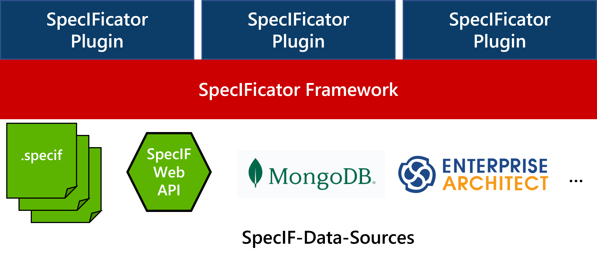
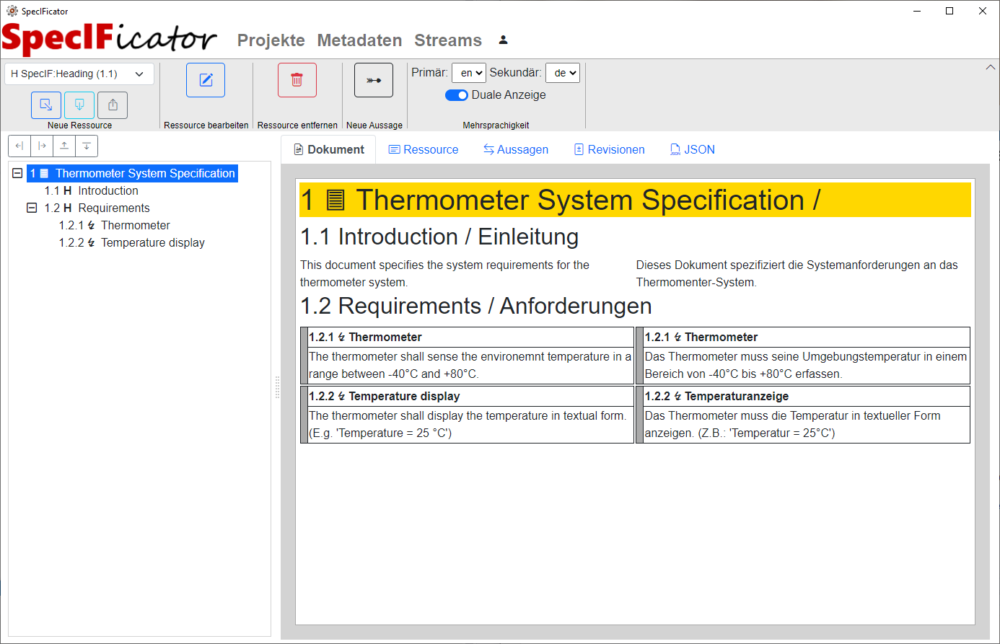

Eine Referenzimplementierung und Open-Source Framework für die Specification Integration Facility (SpecIF) in .NET
SpecIFicator ist eine umfassende Referenzimplementierung für den praktischen Einsatz der Specification Integration Facility (SpecIF).
Es besteht aus
- einem Frontend-Teil, der es ermöglicht SpecIF-Daten benutzerfreundlich anzuzeigen und zu bearbeiten. Das Frontend ist dabei modular aufgebaut und ermöglicht es Enwicklern durch ein Plugin-Konzept die Benutzeroberfläche durch zusätzliche Plugins individuell an die eigenen Bedürfnisse anzupassen. Ein ähnliches Konzept verfolgt beispielsweise auch die Softwareentwicklungsumgebung Eclipse.
- einem Frontend Standard-Plugin das eine grundlegende Benutzeroberfläche für die Bearbeitung von SpecIF-Daten bzw. -Dateien bereit stellt. Damit könnnen beispielsweise im Rahmen des Anforderungsmanagements Dokumente wie Lasten- oder Pflichtenhefte mit SpecIF erstellt, bearbeitet, betrachtet und zwischen Projektbeteiligten ausgetauscht werden.
- einem Backend-Teil, der es ermöglicht SpecIF-Daten über ein Web-API bereit zu stellen. Darüber hinaus implementiert das Backend das standardisierte SpecIF Web-API.
- verschiedenen Open-Source Bibliotheken - erstellt mit C#.NET - die den Zugriff und die Handhabung von SpecIF-Daten ermöglichen und erleichtern.
Alle SpecIFicator-Impelementierungen stehen als Open-Source auf GutHub unter MIT-Lizenz und können damit für kommerzielle und nichtkommerzeielle Zwecke genutzt werden.
Was ist SpecIF?
Eine Initiative und Technologie definiert durch Mitglieder der Arbeitsgruppe PLM4MBSE der Gesellschaft für Systems Engineering (GfSE e.V.)
Ein Vokabular für standardisierte Begriffe im modellbasieren Systems Engineering (MBSE) und Product
Lifecycle Managemnt (PLM),
sowie eine Aussagenlogik
„Subjekt Prädikat Objekt“
Eine Weiterentwicklung des Requirement Interchange Format (ReqIF), also ein Datenformat
Ein standardisiertes Web-API
Eine semantische Integrationsebene
Hatten Sie schon einmal das Problem, dass Sie Daten von einem Werkzeug nicht in ein anderes importieren konnten ohne manuelle Nacharbeit?
Tauschen Sie ihre Anforderungsdokumente, Modelle und andere Spezifikation per Word, PDF oder Grafiken mit Projektbeteiligten oder Zulieferern aus und erzeugen dadurch Medienbrüche?
Genau hier setzt die SpecIF-Initiative an!
SpecIF definiert und standardisiert ein Datenformat sowie ein Vokabular von standardisierten Begriffen mit dem alle anfallenden Daten im Produktlebenszyklus abgebildet, verlustfrei ausgetauscht und integriert werden können.
Weitere Informationen zu SpecIf finden Sie hier und unter https://specif.de.
Das SpecIFicator Framework
Das SpecIFicator Framework ist eine Plattform für Frontend-Applikationen zur Arbeit mit SpecIF-Daten.
Das Framework stellt die Basis für Frontent-Implementierungen bereit, die SpecIF-Daten anzeigen oder bearbeiten können. Die eigentlichen Editoren werden dabei als Plug-ins bereit gestellt und während des Startvorgangs durch das Framewok geladen.
Dadurch ist es möglich mit Hilfe des SpecIFicator Frameworks sowohl open-source, als auch closed-source Plugins zu kombinieren, um beispielsweise spezielle unternehmensspezifische, mit SpecIF abgebildete Daten, auch unternehmensspezifisch anzuzeigen.
Das SpecIFicator Standard-Plug-in
Das SpecIFicator Standard-Plugin ist eine quelloffene Referenzimplementierung eines Plug-ins für das SpecIFicator Framework, das die Anzeige und Bearbeitung von SpecIF-Daten aus unterschiedlichen Quellen erlaubt. Es dient als Basis des SpecIFicator-Frontends für die Arbeit mit SpecIF.

Aktuell bietet das Standard-Plug-in folgenden Funktionsumfang:
- Aufbau von Verbindungen zu SpecIF-Daten aus folgenden Quellen:
- Dateien
- MongoDB-Datenbank
- Sparx Systems Enterprise Architect (UML-Modellierungsplattform)
- SpecIF Web-API
- Ansicht von SpecIF-Hierarchien als Dokumente
- Erstellen und Bearbeiten von Hierarchien, Ressourcen und Aussagen
- Ansicht der Revisionen von Ressourcen mit Differenzansicht
- Möglichkeit der Anzeige und Bearbeitung von Inhalten in mehreren Sprachen (mulit-language)
- Möglichkeit der Navigation entlang der enthaltenen Aussagen (Navigation durch das semantische Netz, Statement-Browser)
- Import und Export von SpecIF-Dateien in oder aus der aktuellen Datenquelle
- Benutzerführung in Deutsch und Englisch.
Das SpecIFicator Backend
Das SpecIFicator Backend implementiert das SpecIF Web-API mit Hilfe von ASP.NET.
Die Referenzimplementierung stellt neben der Umsetzung der in SpecIF 1.1 spezifizierten Endpunkte auch eine OpenAPI/Swagger Oberfläche bereit und ermöglicht das Hochladen von SpecIF-Daten über Dateien.
Docker-Container verfügbar
Über einen Docker-Container kann das Backend gemeinsam mit einer MongoDB-Instanz einfach in einer Docker-Umgebung eingesetzt werden, ohne dass eine Installation des .NET-Frameworks oder ein Erstellen aus den Quelldateien notwendig wäre. Weitere Informationen finden Sie hier.